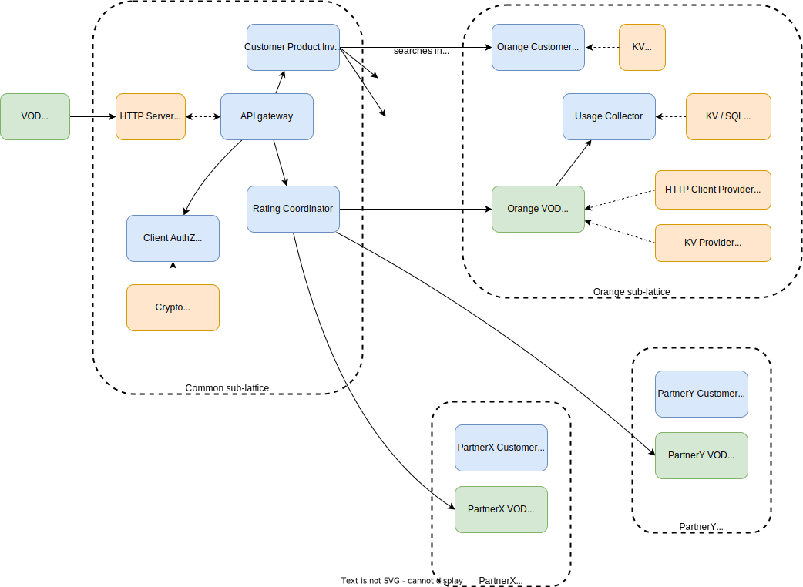

About the distributed-rating project
Concepts
third party management
- definitions
- service vendor: customer-facing tier, manages the customer subscription, billing and payments
- service provider: provides a technical service, also acts as a service vendor in B2B2X scenarios
basic case: the service vendor is the service provider
-
key ideas
- usage rating is done client-side via a rating agent deployed inside the service client app
- a rating agent also acts as an authorization for consuming the service
- a rating agents is the implementation of a commercial offer subscibed by the customer, it is managed like a contract
-
communication diagram

complex case: service vendor and service provider
-
key ideas
- the service vendor subscribes to a service provider (exactly like an end-user customer)
- the users rating agent is a composite of service vendor and service provider rating agents
- the service provider's rating agent is used as the authorization for consuming the service
- end-user usage is uploaded to both service vendor and service provider
-
communication diagram: service subscription

-
communication diagram: service usage

and what about provisionning?
counting and rating
-
a rating agent is a program specific a service / a commercial offer / a payment mode
-
its implementation will depend on the use cases

post-paid
rating agent will
- authorize the customer to consume the service
- generate rated proofs of service usage that will be aggregated on the customer bill (maintained by the service vendor)
prepaid / bucket management
rating agent will
- manage a stateful service bucket and consume it according to customer usage
- report on the consuption of the service bucket
- authorize the customer to consume the service
- generates rated proofs of service usage, used for auditing / fraud detection
µ-payments
rating agent will
- trigger payment request and expect payment proof before allowing the usage of the service
- authorize the customer to consume the service
- generates rated proofs of service usage, used for auditing / fraud detection
agent mandatory traits
- authorizer trait:
authorize(identity) -> key - rater trait:
rate(usage) -> void
basic case

composite case

- note that there is "shortcut" in
3. get vendor identity. It does not really return an identity but a "vendor service subscription" authorization token. Check next paragraph
identity management
The IAM have been simplified in the previous diagrams.
We distinguish
- Client identity (OIDC profile, OAuth token)
- Client service subscription authorization token (OAuth token): traded from the client identity, represents the fact that the client has subscribed to the service, regardless its right to access the service (for instance with an empty bucket on a prepaid service)
And the same for Service Vendors (which are Clients of Service Providers)
The authorizer trait signature is authorize(service subscription authorization token) -> key
Architecture
wasmCloud actors

Kickstart
This document to give you kick to start your journey in Wasmcloud world.
Table of contents
Introduction
This document will take you step by step in your journey in Wasmcloud technology , starting from important links you must check passing by installation & running until testing your 1st actor :tada:
Important links
Installation
Cosmonic
Wash
Use cosmonic constellations
Smithy Notes
This document to give you some notes about smithy with wasmcloud and Rust.
Table of contents
Introduction
Every capability provider has a capability contract - an interface definition - that defines a service and a set of operations it supports. Even actor-to-actor messages, which don't use capability contracts, benefit by well-defined API contracts. In wasmCloud, we define these API contracts in Smithy files.
Important links
Annotation traits
codegen
when can we use this traits will be mentioned in this link but the only note you need to know is :
- you should add the import for codegenrust in your smithy file to see the effect of using this trait
use org.wasmcloud.model#codegenRust
Runbook : Manage ks store
Product name :
- distributed-rating
Product version :
- All
Runbook Goals :
- How to manage kv store using cli
Preconditions
- Cosmonic cli installed
- wash installed
- NATS cli installed
Stages :
- Stage 1 : List kv buckets
- Stage 2 : List all keys in a bucket
- Stage 3 : Put key and value
- Stage 4 : Get value using key
Stage 1 : List kv buckets
open your terminal and execute the below command
nats kv -s connect.cosmonic.sh --creds ~/.cosmo/user.creds ls
This command will retun the buckets in kv store
Stage 2 : List all keys in a bucket
open your terminal and execute the below command
nats kv -s connect.cosmonic.sh --creds ~/.cosmo/user.creds ls bucket-id
bucket-id : is the id of bucket returned from Stage 1
Stage 3 : put key and value
open your terminal and execute the below command
nats kv -s connect.cosmonic.sh --creds ~/.cosmo/user.creds put 125b2a01-09a1-4d64-8bfc-5aa222e9c560 key value
ex nats kv -s connect.cosmonic.sh --creds ~/.cosmo/user.creds put 125b2a01-09a1-4d64-8bfc-5aa222e9c560 customer1 '{\n "product": {\n "id":1234,\n "offerId":534,\n "description":"”Video on Demand”",\n "productPrice": {\n "description":"”Cost per movie”",\n "validTill":"1/March/2024",\n "priceType":"non-recurring",\n "unitOfMeasure": {\n "amount":"1",\n "units":"”movie”"\n },\n "price": {\n "unit":"eur",\n "value":"1"\n },\n "ratingAgent": {}\n }\n }\n }'
Stage 4 : Get value using key
open your terminal and execute the below command
nats kv -s connect.cosmonic.sh --creds ~/.cosmo/user.creds get bucket-id key --raw
Runbook : Link management
Product name :
- distributed-rating
Product version :
- All
Runbook Goals :
- How to manage links throw wash cli
Preconditions
- Cosmonic cli installed
- wash installed
Stages :
Stage 1 : Query Links
open your terminal and execute the below command
wash ctl link query -x 125b2a01-09a1-4d64-8bfc-5aa222e9c560 --ctl-port 4222 --ctl-host connect.cosmonic.sh --ctl-credsfile ~/.cosmo/user.creds
This command will retun the id of the Links
Stage 2 : Delete Link
open your terminal and execute the below command
wash ctl link del <link_id> wasmcloud:keyvalue -x 125b2a01-09a1-4d64-8bfc-5aa222e9c560 --ctl-port 4222 --ctl-host connect.cosmonic.sh --ctl-credsfile ~/.cosmo/user.creds
link_id : is the id returned from Stage 1
Stage 3 : Create Link
open your terminal and execute the below command
wash ctl link put --link-name <LINK_NAME> [OPTIONS]
LINK_NAME : the name of the link you need to create actor-id : the id of the actor which will use this link provider-id : the id of the provider which the actor will link to contract-id : the contract id of this provider
ex : wash ctl link put -x 125b2a01-09a1-4d64-8bfc-5aa222e9c560 --ctl-port 4222 --ctl-host connect.cosmonic.sh --ctl-credsfile ~/.cosmo/user.creds --link-name local-redis-to-vod-bucket MCS4KQH3XXYN2CA7TIY4OAWE4Q3J6AZSPWX6BK5EOF7MH2FE76NSGYIF VAKKKUUZH6FWYPS3T6WVAESSPVQMQYJ2IRCXGSHYCOISSIUGCXVJYC6M linkwasmcloud:keyvalue
Runbook : Shutdown a host
Product name :
- distributed-rating
Product version :
- All
Runbook Goals :
- Shudown a host in a local machine
Preconditions
- Cosmonic cli installed
- wash installed
Stages :
- Stage 1 : Get yout local host id
- Stage 2 : Stop the host
Stage 1 : Get your local host id
open your terminal and execute the below command
wash ctl get hosts -x 125b2a01-09a1-4d64-8bfc-5aa222e9c560 --ctl-port 4222 --ctl-host connect.cosmonic.sh --ctl-credsfile ~/.cosmo/user.creds
This command will retun the id of the running hosts

Stage 2 : Stop the host
open your terminal and execute the below command
wash ctl stop host <host_id> -x 125b2a01-09a1-4d64-8bfc-5aa222e9c560 --ctl-port 4222 --ctl-host connect.cosmonic.sh --ctl-credsfile ~/.cosmo/user.creds
host_id : is the id returned from Stage 1
Rationale
Context
IPCEI CIS WP2
- Cloud Infrastructure and Services
- Work Package #2
- Orange submission: open-source and distributed Core Commerce for IT
Value proposition
-
In a complex service ecosystem and/or 5G context, the rating of service usage is highly complex:
- service providers are no longer those who are in direct contact with the customer or those who invoice the customer, there are aggregators, marketplaces...
- the pricing rules for the usage of technical services may be different depending on the reseller (composite services, service bundles, discounts on purchase, on usage)
- even more: "à la carte" pricing for each customer
-
Rather than uploading raw usage data (~CDR), rated in a centralized rating engine system (or semi-distributed between the various partners who contribute to the final service provided to the customer), we propose to ditribute the rating process to the customer device and upload to the service vendor of usage tickets already valued
- each of the partners contributes to the specific pricing of the customer, the pricing is made directly at the same time as the consumption of the service
- to do a parallel with rights management: it is easier to have components that each carry their authorization model rather than applying the model externally to the entire system
- each partner brings (in the form of an agent) the valuation engine of his service, possibly configured / overloaded by a partner reusing this service
- "as code" rating engine approach rather than a fixed and parameterized system
-
Prerequisites for this scenario are: "reasonably secure" device environment, possibility of deploying code on this environment, ability to detect fraud
-
Orange offers an SDK to its partners allowing them to simply integrate the enhancement of the service into the application used to consume the service
- the SDK is a wasmcloud-js runtime that can run code (1 or wasmcloud agents) in charge of recovery
- the service consumer application feeds the SDK with usage data
Requirements
Main problematics
-
build a model that can support all scenarios of an open service ecosystem (B2B2X)
- vendors, aggregators, marketplaces, dynamic, as-a-service, recharging...
-
establish a shared trust between the 3 main actors (Service Provider, Vendor and Consumer)
- being able to distribute (crypto) proofs of usage, of subscription...
- "good enought" security model, especially on the users devices
-
fraud detection mecanism
Requirements
-
the solution
- cannot rely on DPI to identify trafic usage (cf. HTTP2/3/QUIC)
- is over-IP
- implement (or is frendly to) fraud detection mecanisms and is auditable
- does not require prior human agreement between the service vendor and the service provider (self-service)
-
optionnally, the solution should
- be compatible with a non reliable network (intermitent conncectivity, off-line mode)
Use cases
Some base examples, they could be combined
- customers sharing the same bucket for a given service (eg. Friends and Family offers)
- vendors reselling bundles of services with a different tarification (eg. 30% on Netflix + OCS bundle)
- composite offer (eg. free dataplan for watching VOD service)
- context dependant offers (eg. free videoconference while being at a special event)
- sponsored services (eg. third party offering 20% coupons on VOD for two months)
- each customer gets its personalized offer
Model
Domain exploration
- 3 main actors
- Service Consumer
- Service Vendor
- Service Provider

-
concepts
- rating engine
- proofs
- subscription
- usage
- identity
-
offers
- on usage
- pre-paid
- can an monthly subscription be seen as pre-paid?
-
payments
- 3 types
- µ-transaction: no billing, 1 usage = 1 immediate payment
- post-paid: 1 usage = 1 future payment on a bill
- pre-paid: w/ bucket, 1 usage = 1 bucket update
- in a 3-party interaction (user, vendor, provider)
- either the provider has to trust the vendor to "recover user's paiments"
- needs pre-agreement or a base of trusted vendors) DONT: incompatible w/ requirements
- either the vendor is paying the provider immediatly for the user's usage
- either the vendor has already bought a "pre-paid bucket" to the provider
- either the provider has to trust the vendor to "recover user's paiments"
- 3 types
-
B2B2C scenarios, bucket delegation
- the vendor buys pre-paid bucket to the provider
- it can split it among it's users
- user is paying the usage directly to the provider
- or decide to have an other payment type (µ-payment, billing)
- vendor is paying the usage to the provider
- it can split it among it's users
- the vendor buys pre-paid bucket to the provider
findings
- billing is a vendors responsibility, not a provider one
- it might be simplier (ie. support more scenarios) to always have a user>vendor>provider chain instead of a direct user>provider relation
to be discussed
-
entities modeling
- are Service Vendors also service providers?
- are service Vendors also service consumers?
- implementation note: instead of inheritance we can use traits
-
where shoud the usage proof go ?
- service vendor / provider / both
- avoid proxies
-
similar / alternative approaches
- Distributed IoT Online Rating – The Global Rating Grid @mavoco.com
- are there research papers on the subject?
- Shine (Orange internal project) third party use-cases
Solution 1
proposed solution (WIP)
third party management
- definitions
- service vendor: customer-facing tier, manages the customer subscription, billing and payments
- service provider: provides a technical service, also acts as a service vendor in B2B2X scenarios
basic case: the service vendor is the service provider
-
key ideas
- usage rating is done client-side via a rating agent deployed inside the service client app
- a rating agent also acts as an authorization for consuming the service
- a rating agents is the implementation of a commercial offer subscibed by the customer, it is managed like a contract
-
communication diagram

complex case: service vendor and service provider
-
key ideas
- the service vendor subscribes to a service provider (exactly like an end-user customer)
- the users rating agent is a composite of service vendor and service provider rating agents
- the service provider's rating agent is used as the authorization for consuming the service
- end-user usage is uploaded to both service vendor and service provider
-
communication diagram: service subscription

-
communication diagram: service usage

and what about provisionning?
counting and rating
-
a rating agent is a program specific a service / a commercial offer / a payment mode
-
its implementation will depend on the use cases

post-paid
rating agent will
- authorize the customer to consume the service
- generate rated proofs of service usage that will be aggregated on the customer bill (maintained by the service vendor)
prepaid / bucket management
rating agent will
- manage a stateful service bucket and consume it according to customer usage
- report on the consuption of the service bucket
- authorize the customer to consume the service
- generates rated proofs of service usage, used for auditing / fraud detection
µ-payments
rating agent will
- trigger payment request and expect payment proof before allowing the usage of the service
- authorize the customer to consume the service
- generates rated proofs of service usage, used for auditing / fraud detection
agent mandatory traits
- authorizer trait:
authorize(identity) -> key - rater trait:
rate(usage) -> void
basic case

composite case

- note that there is "shortcut" in
3. get vendor identity. It does not really return an identity but a "vendor service subscription" authorization token. Check next paragraph
identity management
The IAM have been simplified in the previous diagrams.
We distinguish
- Client identity (OIDC profile, OAuth token)
- Client service subscription authorization token (OAuth token): traded from the client identity, represents the fact that the client has subscribed to the service, regardless its right to access the service (for instance with an empty bucket on a prepaid service)
And the same for Service Vendors (which are Clients of Service Providers)
The authorizer trait signature is authorize(service subscription authorization token) -> key
About wasmCloud

Pros & Cons
wasmCloud pro & cons of in the context of this prototype
-
pros
- robust and ubiquous connectivity, network mesh over IP (inherited from NATS)
- zero-trust by design (as long as the runtime is secure): signed nodes, payloads & communications
- efficient
- event driven model, scalable, multi-region friendly
- clean split between pure functions (ie. wasmCloud Actors) and internal states / outside world (ie. wasmCloud CapabilityProviders)
- node runtime support many different hosts (vm, docker, k8s, browsers...)
- polyglot platform (mostly Rust for now)
-
cons
- young technology (in the CNCF sandbox, but quite active)
- opinionated PaaS approach
- no oob support from hyperscalers
- wip on orchestration / observability
- important learning curve on development stack
- rust as main programming language
- cannot (or difficult to) leverage on existing rust framework
- sometimes cryptic error messages
- lack of extensive documentation
-
recommandations for this prototype
- use wasmCloud "at the egde", do not try to implement the whole solution with wasmCloud
Main concepts
| concept | caracteristics |
|---|---|
| host | or node, runtime on a host, erlang VM |
| lattice | meshed netork, NATS |
| actors | wasm payloads, stateless functions, implementing an interface |
| capability providers | wasm payloads, stateful and attached to a node, offering services |
| links | declarative links between actors and capability providers |
| interface | functionnal interface of an actor / capability |
the wasmCloud dashboard

Resources
main sites
- wasmcloud.com - links, articles
- wasmcloud.dev - product documentation
- cosmonic.com - the company that supports the opensource
- nats.io
documentation and trainings
- wasmCloud doc
- NATS doc
- Cosmonic: Introduction to wasmCloud & WebAssembly basics
- Linux Foundation: WebAssembly Actors: From Cloud to Edge
articles
- Reflections on Three Years of wasmCloud, Kevin Hoffman
- WebAssembly Components and wasmCloud Actors: A Glimpse of the Future, Taylor Thomas
Architecture
components
-
browser runtime
- javascript wasmCloud runtime deployed as javascript SDK
-
user ident/authent
- OIDC / OAuth
- expose service to recover browser runtime host-keys
-
ngs
- NATS network

Prototype Architecture
actor model

git repos
├── generic
│ ├── agent-api-provider
│ ├── agent-storage-provider
│ └── collector-provider
├── interface
│ ├── agent-storage-interface
│ ├── authorizer-interface
│ ├── collector-interface
│ └── rater-interface
├── specific-orange
│ ├── orange-offer1-agent
│ └── orange-offer1-authorization-provider
└── specific-vendor1
├── vendor1-offer1-agent
└── vendor1-offer1-authorization-provider
Technical requirements and questions (WIP)
project specific
fraud / risk analysis
-
is there a risk of a rating-agent doing non-legitimate modifications of its associated bucket / an other bucket?
-
if those risks are too high, can we have "server-side" rating agent proxy to mitigate them?
stateless agents
- how to manage efficiently agents configuration in a stateless word? (caching mechanisms / via dedicated local capability providers?)
interagent communication
- how to ensure an actor (rating agent for instance) only speak to its conterpart (collector agent for instance)
wasmCloud generic
keep the rating agent code public ?
- link between the source code and the wasmCloud actor on OCI regristry ?
message delivery guarantee
- by design "naked NATS" does not guarantee message delivery, does wasmCloud implement it?